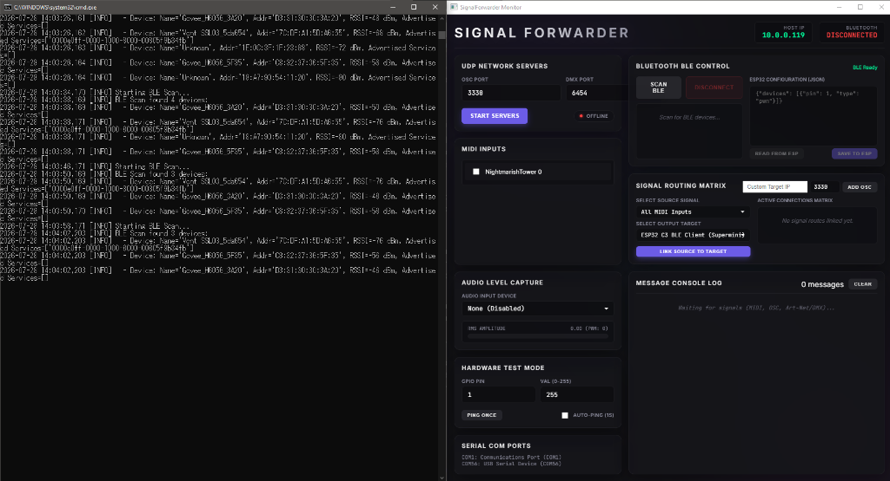

THE ARCHITECTURE
Signal Forwarder is a cross-platform desktop application that discovers, captures, and routes live signals — MIDI, OSC, Art-Net/DMX, and audio levels — over Bluetooth Low Energy (BLE) to ESP32 microcontrollers and other network endpoints. Use it to trigger physical actuators, haptics, and lights directly from VR headsets, instruments, DAWs, or live audio.
(MIDI / OSC / DMX / Audio)
(Routing Matrix)
(BLE / Network)

The Signal Forwarder dashboard — MIDI inputs, BLE control, signal routing matrix, and simulator.
DOWNLOAD
Grab the one-click launcher for your platform. The macOS version auto-installs dependencies on first run.
SignalForwarder.exe. Fully standalone — no Python needed.
SignalForwarder.command and the full SignalForwarder project folder.
Double-click the .command file — it auto-creates a virtual environment and installs all dependencies on first run.
Requires Python 3.10+ (install via Homebrew: brew install python).
I. THE HARDWARE
The companion ESP32-C3 Supermini firmware advertises over BLE and accepts PWM, MIDI note, and binary control commands in real time.
SignalForwarderESP32 with a custom Service UUID. Signal Forwarder highlights it with a green tint in the scan list.
[0x01, pin, pwm_val] for instant PWM writes, or [0x02, pin, note, velocity, dur_hi, dur_lo] for timed note-on/off events.
II. THE SIGNAL ROUTER
The desktop app discovers all available signal sources and output targets, then lets you wire them together in a visual routing matrix.
All MIDI Inputs, All OSC Senders, or All DMX Senders to catch every signal of that protocol from any device.
III. TESTING & SIMULATION
Use the built-in Signal Simulator to test your routing and hardware without needing external sources.
SIMULATOR MODES
- MIDI Note — Set note number (0–127), velocity (0–127), and duration (ms). Default: Note 60, Velocity 50, 500ms.
- PWM Raw GPIO — Send a raw pin + value (0–255) command.
- OSC Packet — Specify an OSC path and float value.
- DMX (Art-Net) — Set a DMX channel and level.
WORKFLOW
- Ping Once: Sends a single simulated signal through the routing matrix.
- Auto-Ping (1s): Continuously sends signals once per second — leave it running while configuring hardware until the LED starts responding.
- Important: Simulated signals only reach devices if you link
Simulated Signal / Simulatorto a target in the routing matrix. No hardcoded shortcuts.
IV. BRIDGING THE VR GAP
To integrate physical LEDs or haptics with your virtual instruments in Patchworld:
PATCHWORLD SETUP
- Create an
executeblock or sound-trigger node. - Add a
port_out 3330action node. - Direct the payload to your computer's local IP address.
- Bind the action to an interactive object like a virtual drum or button.
ADDRESS MAPPINGS
- Toggle: Flip the pin state on each trigger. Perfect for room lamps.
- Pulse: Quick pulse (e.g., 50ms) to actuate relays or solenoids.
- PWM Fader: Maps 0.0–1.0 float values to LED brightness or motor speed.
"The transition from virtual gestures to physical illumination completes the loop of spatial presence."— Signal Forwarder Integration Guide